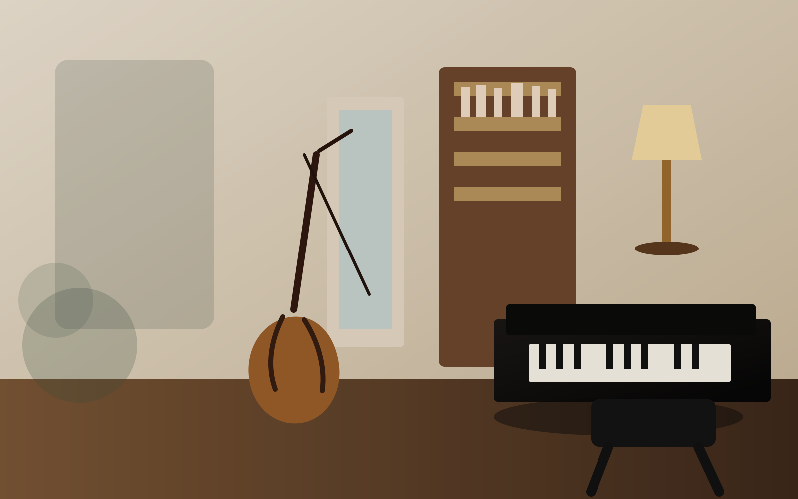

Suzuki Violin
Violin instruction with Jean (John) Blanc, including early posture, tone, ear training, repertoire, review, and parent-guided home practice through the Suzuki Method.

Thornhill - Greater Toronto Area
Jean (John) Blanc teaches violin. Rose-Marie Blanc teaches piano. Together, they give families a rare coordinated path for early Suzuki learning, RCM preparation, and long-term musical growth.
Programs
The studio is positioned for families who want a serious musical foundation without a cold conservatory atmosphere. The Suzuki method is presented as a new concept in teaching a small child, including children as young as 3 years old or less, to play an instrument. Students can begin with listening and imitation, add reading and theory, and move toward RCM goals as they mature.
Violin instruction with Jean (John) Blanc, including early posture, tone, ear training, repertoire, review, and parent-guided home practice through the Suzuki Method.
Piano instruction with Rose-Marie Blanc, connecting a warm listening-first start with reading, technique, and expressive musicianship.
Coordinated piano and violin lessons for families who want siblings or one student to grow across both instruments with consistent expectations.
A structured path for students who are ready for Royal Conservatory repertoire, technique, sight reading, ear tests, and exam preparation.
Teachers
Violin Teacher - Suzuki Method
Jean received his violin training from the University of Bucharest. He is a member of SAO, SAA, and ISA, Chairman of the Beethoven Society for Pianists, and an affiliate teacher with the Royal Conservatory of Music, Toronto.
Piano Teacher - Suzuki Method
Rose-Marie is a member of SAO, SAA, and ISA, Musical Director of the Beethoven Society for Pianists, and an affiliate teacher with the Royal Conservatory of Music, Toronto. She is also known as the Music Director and Founder of the BAPS Suzuki Program.
Approach
The studio welcomes the Suzuki idea that very young children can begin learning music.
Parents learn how to support short, consistent home practice between lessons.
Posture, tone, rhythm, and memory grow through review and carefully sequenced repertoire.
RCM work, note reading, theory, and performance preparation are added when the student is ready.
Business profile
Blanc's Music Studios should lead with what is hardest for competitors to copy: husband-and-wife Suzuki specialists, violin and piano under one roof, more than 30 years devoted to teaching and performing, deep association credentials, and a path that can serve both very young beginners and students preparing for formal RCM milestones.
Reputation proof
Allison Leyton-Brown's official biography describes her as an award-winning composer, pianist, and musical director, and notes that Rose-Marie Blanc remained her classical piano teacher for 17 years.
Read Allison's bioSheet Music Plus lists Allison Leyton-Brown's Lumiere Solitaire and notes that the work was dedicated by the composer to her piano teacher Rose-Marie Blanc and her husband Jean Blanc.
View the music listingPublic references
These public sources help families verify the teachers' Suzuki background, community activity, performance history, and long-standing connection to Blanc's Music Studios.
Public profile listing Jean Blanc with Blanc's Music Studios.
Canadian SinfoniettaPerformer bios for Rose Marie Blanc and Jean Blanc, including BAPS, Beverley Acres, and teaching history.
Beethoven SocietyThe Society's about page identifies Rose-Marie and Jean Blanc as founders of the Beethoven Society for Pianists.
Charity listingCanadian charity listing showing Mr. Jean Blanc as chairman, with the studio phone, email, and Thornhill address.
Former studentAllison's bio notes that Rose-Marie Blanc remained her classical piano teacher for 17 years.
Sheet Music PlusLumiere Solitaire was dedicated by composer Allison Leyton-Brown to Rose-Marie Blanc and Jean Blanc.
Contact
Call the studio to discuss lesson availability, the right starting age, parent involvement, and whether Suzuki, RCM, or a blended path fits your child. Email is also available for first inquiries.
Blanc's Music Studios
905-731-5336 jean_blanc@hotmail.com 21 Thorne Lane